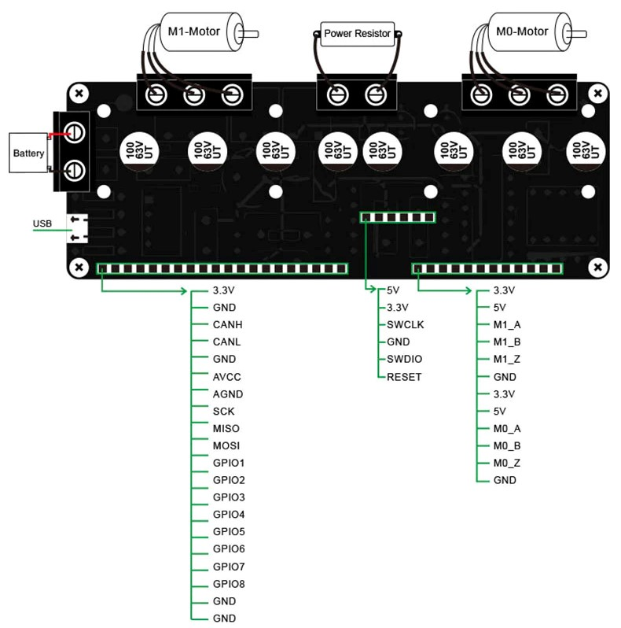

If you have not worked with ODrive / ODESC / ... before, I recommend following my getting started guide.
The following settings are based on the ODrive hoverboard guide.
The hoverboard motors have 15 polepairs.
odrv0.axis0.motor.config.pole_pairs = 15odrv0.axis1.motor.config.pole_pairs = 15Because the motors have a high resistance, you need to increase the calibration voltage.
odrv0.axis0.motor.config.resistance_calib_max_voltage = 4odrv0.axis1.motor.config.resistance_calib_max_voltage = 4Lower the current range to get a better reading.
odrv0.axis0.motor.config.requested_current_range = 25odrv0.axis1.motor.config.requested_current_range = 25Lower the bandwidth to get better control.
odrv0.axis0.motor.config.current_control_bandwidth = 100odrv0.axis1.motor.config.current_control_bandwidth = 100Enter the estimated torque constant.
odrv0.axis0.motor.config.torque_constant = 8.27 / 16odrv0.axis1.motor.config.torque_constant = 8.27 / 16The hoverboard motors use hall effect sensors.
odrv0.axis0.encoder.config.mode = ENCODER_MODE_HALLodrv0.axis1.encoder.config.mode = ENCODER_MODE_HALLThe hall effect sensors in combination with the magnets produce 90 counts per revolution.
odrv0.axis0.encoder.config.cpr = 90odrv0.axis1.encoder.config.cpr = 90To get better alignment, use 150 pulses for the calibration.
odrv0.axis0.encoder.config.calib_scan_distance = 150odrv0.axis1.encoder.config.calib_scan_distance = 150odrv0.axis0.encoder.config.bandwidth = 100odrv0.axis1.encoder.config.bandwidth = 100Set the controller gains.
odrv0.axis0.controller.config.pos_gain = 1odrv0.axis1.controller.config.pos_gain = 1odrv0.axis0.controller.config.vel_gain = 0.02 * odrv0.axis0.motor.config.torque_constant * odrv0.axis0.encoder.config.cprodrv0.axis1.controller.config.vel_gain = 0.02 * odrv0.axis1.motor.config.torque_constant * odrv0.axis1.encoder.config.cprodrv0.axis0.controller.config.vel_integrator_gain = 0.1 * odrv0.axis0.motor.config.torque_constant * odrv0.axis0.encoder.config.cprodrv0.axis1.controller.config.vel_integrator_gain = 0.1 * odrv0.axis1.motor.config.torque_constant * odrv0.axis1.encoder.config.cprSet the velocity limit.
odrv0.axis0.controller.config.vel_limit = 10odrv0.axis1.controller.config.vel_limit = 10Set the control mode to velocity.
odrv0.axis0.controller.config.control_mode = CONTROL_MODE_VELOCITY_CONTROLodrv0.axis1.controller.config.control_mode = CONTROL_MODE_VELOCITY_CONTROLIf you are using the latest firmware version.
odrv0.config.enable_brake_resistor = TrueAfter changing settings, use save and reboot.
odrv0.save_configuration()odrv0.reboot()This project is based on these two James Bruton projects.
The remote uses the same code as James' remote but the pins are not the same and it only uses one joystick.
It's the same remote as my cable cam project, based on this video.
There is a small mistake in the schematic, make sure to use the written pin numbers because pin 13 is not correct in the schematic.
There is code for the remote (Arduino Uno), the main controller (Arduino Mega) and the Arduino that handles the accelerometer (Arduino Nano), you can download the code here.
There is also a calibration file in the folder, you need to run that on the Arduino Nano, replace the values in the imu-code and upload it.
For this project I used a dual axis ODESC.
This is the schematic for the balancing robot.
It is recommended to use 22 nanofarad capacitors between the hall effect sensor lines and ground, on the ODESC these are on the board so they are not needed.